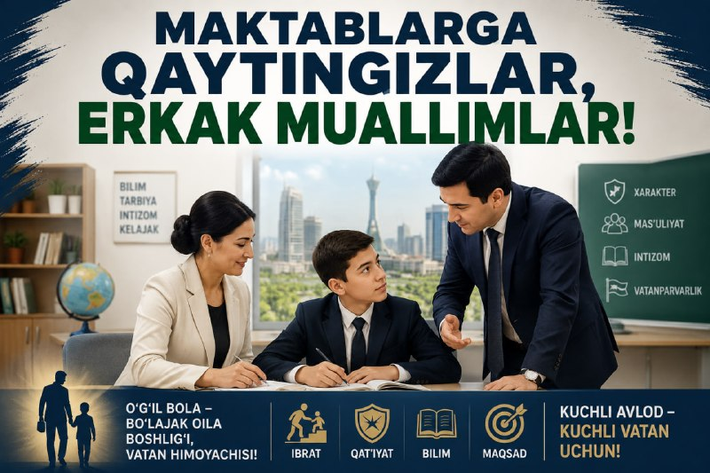

Haqiqat hamma narsadan baland turadi.

Haqiqat hamma narsadan baland turadi.
Yaqinda maktabda o‘quvchi o‘qituvchiga qo‘l ko‘tardi va bu juda katta shov-shuv bo‘ldi. Shunda qanday qilib o‘quvchilar bu darajaga qadar yetib keldi degan savol meni o‘ylantirdi. Va maktablarda erkak o‘qituvchilarning deyarli yo‘qligi va qariyb 99,9 foiz ustozlarning ayollardan iborat ekanligini bosh omil sifatida ko‘rdim.
Farzandni ulg‘aytirishda ota va onaning o‘rni birdek muhim bo‘lgani kabi o‘g‘il bolalar tarbiyasida erkak muallimning o‘rni qanchalik muhim ekanligi rad etib bo‘lmas darajada oydin haqiqatdir.
Bola o‘zidan kattalardan rang oladi.
Ayolning tabiati qandayligi esini tanigan har bir insonga ma’lum:
— ayollar hissiyotga beriluvchandirlar, ular qaror qabul qilishda uzoqni ko‘ra olmaydilar;
— ayollar shoshqaloqdirlar, tezda janjal qilishlari shundan;
— ayollar xatolarini tan olmaydilar, juda katta mashaqqat bilan xatosini bo‘yniga olishi mumkin;
— ayollar nazokatli va ziynatlanishga o‘chdirlar;
— ayollar mehribon va shafqatli bo‘lib, qattiqqo‘llik va dag‘allik ularga yotdir. Bu ularning ayollik sifatidir, bundan boshqacha bo'lishi mumkin emas, shu ma'noda, ushbu sifatlar ayollarga ko'rk, erkaklarga aybdir.
O‘g‘il bola – bo‘lajak oila boshlig‘i. Undan vatan himoyasi, kuch-quvvat, jiddiylik, barqarorlik, hislarini boshqarish, sovuqqonlik va bir qancha mas’uliyatlar talab etiladi. Bu sifat va xulqlar o‘g‘il bolada olti-yetti yoshlaridan boshlab shakllanadi. Eng muhimi, bu xislatlarni ayol emas, erkak zoti o‘rgata oladi, qolaversa, bu xususiyatlar so‘zga qarab emas, ibratga qarab o‘rganiladi.
Aynan shu muhim davrda – 7 – 18 yoshlar orasida, o‘g‘il bola shaxs sifatida shakllanadigan davrda bizning jamiyatimizda bola otasini deyarli ko‘rmaydi; faqat onasi bilan muloqot qiladi; maktabda esa faqat ayollardan iborat ustozlar qo‘lida qoladi. Natijada, uni tiyib turadigan, unda qat’iyat, odob-axloq, insof-diyonat, tafakkur va mulohazakorlikni shakllantiradigan kuch mutlaqo mavjud emas. Bola esa yengiltak, xayoliga nima kelsa, shuni qiladigan; va’dasida turmaydigan; oila mas’uliyatini his etmaydigan; qarorlari tez o‘zgaruvchi; mustaqil qarorga ojiz bo‘lgan; qo‘rqoq, ayni paytda tajovuzkor; o‘ziga ko‘p oro beradigan bo‘lib katta bo‘lmoqda. Endi unga erkaklarga xos qattiqqo‘llik qilinsa, bemalol ustoziga qo‘l ko‘taryapti; ustoz ayollarni so‘kyapti; bu hol esa deyarli ommaviy tus olib bormoqda.
Ayrim dalillar:
1-video
2-video
3-video
4-manba
5-manba
Bu haqiqatni, ojizona fikrimcha, har bir oqil inson tasdiqlaydi, shu sababli, kamina maktablarga kuchli va aqlli, ilmli va tadbirli erkak muallimlarni qaytarish chorasini ko‘rish lozim deb o‘ylayman.
Hozir yigitlarimining mas’uliyatsiz, tekinxo‘r, oila qurishga tayyor emasligi zamirida ham biz aytib o‘tgan sabablar yotadi.
Yaqinda “Xarakter” online loyihasini boshlagan edik. Maqsad – yigitlarda erkakcha xarakterni shakllantirish; va’dasiga vafo qiladigan; oilaparvar; ayollarni qadrlaydigan; o‘ziga ishongan bir tabiatni tarbiyalash. Bu bir qancha amaliy bosqichlardan iborat. Ana shu loyiha e’loni doirasida: “Maktablarda 12 yil xotin o‘qituvchilar ta’limini olgan o‘g‘il bolalarda erkak xarakteri shakllanmayapti. Shu sababli bugun 18 yoshli yigitchalarda hamon dunyoqarash mavjud emas, harakatlari, hissiyot va munosabatlarida xotinlarning xususiyatlari ko‘zga tashlanadi. Xotin tarbiyasining natijasida o‘g‘il bola erkakka xos qat’iyat, birso‘zlilik, dag‘allik, mardlik va tadbirli tafakkurdan mahrum bo‘lib ulg‘ayadi”, – deb yozgan edik. Aynan shu qismiga ikki nafar ayol muallimadan e’tiroz keldi. Birlari: “Men 20 yillik oʻqituvchi sifatida bu xatni sizga yozyapman. Oxirgi yozgan postingiz erkaklar uchun boʻlsa ham buni men kabi ayol ustozlarga haqorat deb bilaman. Umrimizni bolalar ta'limi uchun bag'ishlab, bu yoʻldagi mashaqqatlarni mayli, shu bolalar kelajagi buyuk boʻlsin deya oʻzimizni ovutib endi sizdan bu kabi gaplarni eshitaylikmi? Yaxshi ish qilmabsiz. Attang”, – deb yozibdilar.
Birlari esa: “...koʻpchilik yoshi ulugʻ va oilasini halol yoʻl bilan boshini tebratayotgan ustoz ayollarni dilini ogʻritadigan post boʻlibdi. Mayli edi, haqiqat boʻlsa ham bu tariqa olib chiqishmaslik kerak edi balki”, – debdilar.
Hurmatli ustozlarim! So'zlarim qalbingizni og'ritgani uchun uzr so'rayman. Fikr bildirib, xat yozganingiz uchun rahmat!
Bu yerda sizlarga hech qanday haqorat mavjud emas yoki mehnat va mashaqqatingizni inkor etish ham yo'q, balki vaziyat jiddiyligini bayoni bor. Ikkingiz yozgan matnda ham ayollarga xos ta’sirchanlik sezilib turibdi. Aksincha, Akrom Malik, to'g'ri aytasiz maktablarimida erkak ustozlar ko‘paysa, yaxshi bo‘lardi degan e’tirof ayni chuqur bir so‘z bo‘lur edi.
Shuningdek, xotin so‘zidan ranjibdilar, holbuki, xotin so‘zi aslida, davlatga rahbarlik qiluvchi ayol degani. Ayol esa oilaga g‘amxo‘rlik qilguvchi degan mazmunga ega. 👉 Qarang.
Keling, haqiqatga tik qaraylik, hayotga nazar solaylik va bugun o'g'illarga chinakam erkak tarbiyasi yetishmayotganini tan olaylik va masalani amaliy jihatdan hal qilish chorasini ko'raylik. Aks holda, biz bu masalada yanada jiddiy muammolar girdobida qolamiz. Orientatsiya buzilishlari holatlari fojiali tarzda ko'payish xatarini ham nazardan qochirmaylik. Dunyoqarashi hamon go'dakniki kabi qolib ketayotgan o'g'illarimiz ertaga oilani qanday qilib boshqarishlari haqida ko'proq bosh qotiraylik. Shunda bizning so'zlarimiz sizga botmaydi, balki juda ham ma'qul kelib, qo'llab-quvvatlashni boshlaysiz.
Umid qilamanki, ushbu qarashlarimizni muhtarama opa-singil muallimalarimiz to‘g‘ri tushundilar hamda o‘z farzandlari tarbiyasida ham bu jihatni hisobga oladilar.
Kasb tanlayotgan yigitlarga qarata aytamizki, aziz do‘stlar! O‘qituvchi bo‘ling! Bugun maktablar erkak ustozlarga muhtoj, sizlarning qaroringiz butun Vatan va xalq kelajagi uchun muhimdir! Maktablarga qaytingizlar, erkak muallimlar!
Akrom MALIK